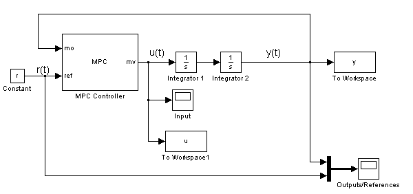
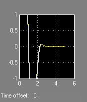
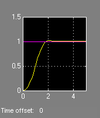

This very simple demonstration shows how to use MPC to control a double integrator under input saturation.
Author: A. Bemporad
MPC object setup
Ts=.1; % Sampling time p=20; % Prediction horizon m=3; % Control horizon mpc_controller=mpc(tf(1,[1 0 0]),Ts,p,m);
Specify input saturation constraints
mpc_controller.MV=struct('Min',-1,'Max',1);
Setup data for the simulation using Simulink
True initial state
x01=0; % First integrator x02=0; % Second integrator Tstop=5; % Simulation time r=1; % Set point mpc_doubleint sim('mpc_doubleint',Tstop)
manipulated
variable measured output and
reference
